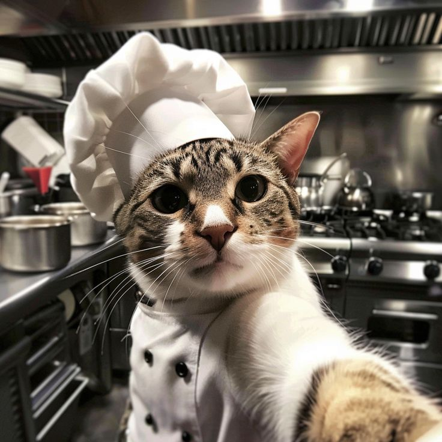

Welcome to 4K Restaurant, where every meal is prepared with passion and served with care. We believe that great food brings people together, creating moments that become lasting memories. From the moment you walk through our doors, our goal is to make you feel at home with delicious food, a welcoming atmosphere, and exceptional service. Our menu is crafted using fresh, high-quality ingredients and recipes inspired by both traditional and modern flavors. Whether you're joining us for a quick lunch, a family dinner, or a special celebration, we strive to deliver dishes that satisfy every taste and exceed your expectations. At Flavor Haven, our team is dedicated to providing an unforgettable dining experience. Every dish is prepared with attention to detail, ensuring the perfect balance of flavor, quality, and presentation. We take pride in creating a place where friends and families can gather, relax, and enjoy great food together. Thank you for choosing Flavor Haven. We look forward to serving you and becoming your favorite destination for delicious meals, warm hospitality, and memorable experiences.
|
 Chef Meow
About Our ChefOur Head Chef is passionate about creating exceptional dishes that combine fresh ingredients, authentic flavors, and creative presentation. With years of culinary experience, our chef is dedicated to preparing every meal with precision, care, and attention to detail. Inspired by both traditional recipes and modern cooking techniques, our chef believes that great food begins with quality ingredients and a love for cooking. Every dish is thoughtfully crafted to provide guests with a memorable dining experience. From selecting the finest ingredients to perfecting every recipe, our chef and kitchen team work tirelessly to ensure that each plate served reflects our commitment to quality, taste, and excellence. Whether you're enjoying one of our signature specialties or trying something new, you can expect every bite to be made with passion and pride. |